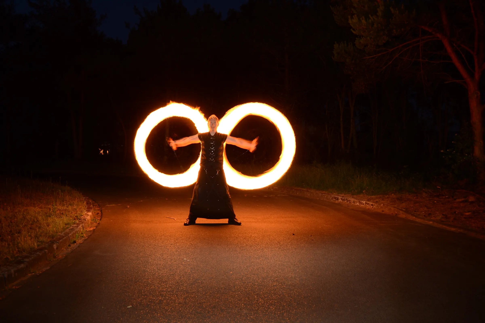

Start/Endless on Fire
Endless on FireEndless on Fire.
Seit März 2008: Feuershows für Hochzeiten, Geburtstage, Jubiläen, Firmenevents und Stadtfeste, ein Custom-Shop für Feuerrequisiten nach Maß und Feuerwerke mit Partner. Wir brennen Ihren Moment in das Gedächtnis Ihrer Gäste ein!
01 Angebot
Feuer, sicher inszeniert.
Von Rom bis Sylt: Endless on Fire ist seit März 2008 die Feuer- und Eventmarke von Stephan Reuvekamp. Egal ob kleine Feier oder großes Event.
Feuershows
Für Hochzeiten, Geburtstage, Jubiläen, Firmenevents und Stadtfeste, jede Show individuell geplant.
- Private Feiern
- Firmenevents und Stadtfeste
- Walkacts, z. B. auf Stelzen
- Auftrittsorte u. a. Sansibar Sylt
Custom-Shop
Feuerrequisiten nach Maß, konstruiert und gebaut wie ein Produkt.
- Stäbe, Fächer, Käfige
- Sonderanfertigungen
- Ersatzteile
Lyco 2.0
Selbst entwickelte Fliehkraftkupplung für Feuerrequisiten.
- Eigenentwicklung
- Konstruktion & Bau
- Details auf endlessonfire.de
Feuerwerke
Feuerwerke gemeinsam mit meinem langjährigen Partner Wolfgang Stabe von der STABE! Company.
- Mit STABE! Company
- Computergestützte Zündtechnik
- Feuerwerk-Finale ab 1.900 €
Lasershow
Lasershows als Ergänzung zu Feuer und Feuerwerk.
- Laserprojektion
- Outdoor und Indoor
- Auf Anfrage
Video · Feuershow
Endless on Fire in Bewegung.
Feuer lässt sich nur bewegt richtig zeigen: ein Zusammenschnitt meiner Feuershow, veröffentlicht auf dem eigenen YouTube-Kanal @endless-on-fire.
02 Preise
Ab 600 € für Ihre Feuershow.
Jede Show wird gemeinsam mit Ihnen geplant und auf das Thema Ihrer Veranstaltung abgestimmt.
Feuershow für Hochzeit, Geburtstag, Jubiläum, Firmenevent oder Stadtfest, zuzüglich optionaler Module.
Feuershow mit abschließendem Feuerwerk, gemeinsam mit Wolfgang Stabe von der STABE! Company.
03 Galerie
Feuer, Pyro, Stunt, Laser.
Eigene Shows, Walkacts und Produktionen, nach Kategorie filterbar. Fotos: Stephan Reuvekamp und weitere Fotografen, siehe Bildnachweis im Impressum.
42 Bilder

Bühnenshow mit Feuerringenibb on Ice, Ibbenbüren 
Walkact: Sensenmann auf StelzenStelzenläufer mit Schädelmaske und Sense vor einer Horror-Schiffskulisse, mit Dodekaeder-Leuchte · Ort und Jahr folgen 
Feuerfächer vor GästenFeuershow auf dem Rasen vor einem Gebäude · Foto: siehe Bildnachweis 
FunkenregenFeuerstab mit Funkenschweif bei Nacht · Foto: siehe Bildnachweis 
Liegende AchtZwei Feuerkreise mit ausgebreiteten Armen · Langzeitbelichtung, Juni 2012 
FeuerkreiseLangzeitbelichtung bei Nacht 
FeuerblüteDarsteller mit Feuerpoi · Langzeitbelichtung, Juni 2012 
FeuerringeNächtliche Straße · Langzeitbelichtung, Juni 2012 
Blüte aus FeuerLangzeitbelichtung, Juni 2012 
UnendlichFeuerbahn als liegende Acht · Juni 2012 
FeuerfressenNahaufnahme · Oktober 2014 
FeuerspuckenStichflamme · August 2010 
Halloween im Zoo OsnabrückFeuerspucken vor Publikum · Oktober 2014 
ibb on IcePublikum auf dem Platz · Ibbenbüren, Dezember 2018 
FeuerherzInstallation aus zwei brennenden Herzen · Juni 2018 
FunkenregenVor dem Endless-on-Fire-Banner · Februar 2017 
Pulver-EffektFlammen und Funken · Februar 2017 
FunkenkuppelFebruar 2017 
FackelnAufbau im Grünen · Oktober 2014 
Aufbau im HofFeuerschalen vor der Show · Juni 2018 
Blick vom FeuerplatzFeuerschalen im Vordergrund, dahinter Kinder mit Laternen und Bühne mit Band auf einem Altstadtplatz · Ort und Jahr folgen 
Hinter den KulissenFlightcases auf Kopfsteinpflaster neben einer historischen Sandsteinkirche · Ort und Jahr folgen 
Showfläche vorbereitetRunde Spielfläche mit Pylonen, Bänken und Feuerständern, vor Showbeginn · Foto: siehe Bildnachweis 
Aufbau im ParkEndless-on-Fire-Banner, Feuerschalen und Ständer auf einer Wiese · Ort und Jahr folgen 
Aufbau am StrandFeuerschalen vor der Show · Juni 2018 
Computergestützte ZündtechnikFunkzündanlage mit Laptop und Zündmodulen 
FeuerfontänenZwei Bühnenfontänen zwischen Feuerständern · Foto: siehe Bildnachweis 
FeuerwerkGroßes Bouquet am Nachthimmel · Foto: siehe Bildnachweis 
Zündmodul bei NachtSelbst gebautes Pyrotechnik-Zündmodul, LEDs aktiv 
FontänenBühnenfeuerwerk 
Feuerwerk, Aufbauibb on Ice · Ibbenbüren, Dezember 2018 
Feuerwerk, PositionenAbstände nach Plan · Dezember 2017 
Feuerwerk von obenAuslage vor dem Abbrennen · Silvester 2018 
Explosion im FeldPyrotechnik bei TV-Dreharbeiten · August 2014 
FeuerballPyrotechnik bei TV-Dreharbeiten · August 2014 
Auto auf zwei RädernFahrstunt · Juni 2012 
Auto-ExplosionTV-Dreharbeiten · August 2014 
Mit FeuerwehrLöschen nach dem Effekt · TV-Dreharbeiten, August 2014 
Lo Show dei RecordGuinness World Records · Canale 5, Rom 
Studio in RomSet von „Lo Show dei Record“, Canale 5 
DreharbeitenMit TV-Team 
LasershowLaserprojektor im Park am Springbrunnen
04 Einsätze
Von Rom bis Sylt.
Auftrittsorte und Aufbauten. Weitere Fotos von endlessonfire.de folgen nach Freigabe.

Sansibar Sylt
Feuershow

ibb on Ice
Ibbenbüren, Dezember 2018

Hochzeitsmesse Leugermann
Messestand, Ibbenbüren

Feuerwerk, Aufbau
ibb on Ice, Dezember 2018

Bühnenshow mit Feuerringen
ibb on Ice, Ibbenbüren

Aufbau im Park
Banner, Feuerschalen, Ständer · Ort und Jahr folgen

Blick vom Feuerplatz
Altstadtplatz mit Laternen und Bühne · Ort und Jahr folgen

Hinter den Kulissen
Flightcases neben historischer Kirche · Ort und Jahr folgen

Walkact auf Stelzen
Sensenmann mit Dodekaeder-Leuchte · Ort und Jahr folgen

Feuerfächer
Feuershow vor Gästen · Foto: siehe Bildnachweis
05 Presse
In der Zeitung.
Ausschnitte aus der Lokalpresse. Abgedruckt sind nur Foto, Überschrift und erste Zeilen.

Feuershow auf der Eisbahn
ibb on Ice, Ibbenbüren · Foto: Endless on Fire

Dschungelnächte im Zoo
Zoo Osnabrück · Zeitungsfoto

Start in den Frühling
Frühlingserwachen Wallenhorst · Foto: PR-Foto
06 Custom-Shop
Requisiten aus dem CAD.
Feuerkörbe, Doppelstäbe und Pendel: jedes Teil wird erst konstruiert, dann gebaut. Mehr Werkstattbilder auf der Seite Prototyping.

Dodekaeder-Feuerkörbe
Gebaut, nicht nur gerendert · Edelstahl

Lyco 2.0
Fliehkraftkupplung, Eigenentwicklung

Doppelstab
Stab mit zwei Käfigen

Aufhängung
Detail der Verbindung

Feuerfächer
Strahlenförmige Dochtträger

Pendel
Requisit mit Gegengewicht

Feuerkäfige, Paar
Lasergeschnittener Edelstahl

Material für die Serie
Kevlar, Aluminium, Drehteile

Serienfertigung
Fertige Stäbe, versandbereit
07 Stunt & Pyrotechnik
Pyrotechnik und Stunt.
Ausgebildet in Bühnenpyrotechnik und als Stuntman: Fahrstunts mit Autosprüngen und Überschlägen, Motorrad-Treppenstunts, dazu Mitwirkung an TV-Produktionen und Live-Auftritten.
- Stuntman-Ausbildung, einjährigAction Movie Film & Stuntteam, Stuntschule Mendig · 2011
- ActionfahrtrainingAction Movie Film & Stuntteam, Mendig · 2010
- Bühnenpyrotechniker, staatlich anerkannter LehrgangHummig Effects Pyrotechnikerschule, Kochel · 2008
- Sonderlehrgang Pyrotechnik, staatlich anerkanntHummig Effects Pyrotechnikerschule, Kochel · 2010
Film & TV
- GalileoProSieben · Mitwirkung an mehreren Produktionen
- Taxi Taxi (Mythen-Fakecheck)Kabel eins · Dreharbeiten ca. 2011
- Abenteuer LebenKabel eins · Mitwirkung
- ExplosivRTL · Mitwirkung
- Lo Show dei Record (Guinness World Records)Canale 5, Rom · Mitwirkung
- CSI: KowelenzKinofilm · Stuntdouble und Special Effects Coordinator
Live & Events
 Sansibar SyltFeuershow
Sansibar SyltFeuershow DschungelnächteZoo Osnabrück · dazu Halloween im Zoo, 2014
DschungelnächteZoo Osnabrück · dazu Halloween im Zoo, 2014 Ibb on IceIbbenbüren · Feuershow auf der Eisbahn
Ibb on IceIbbenbüren · Feuershow auf der Eisbahn Frühlingserwachen WallenhorstFeuershow bei den Wallenhorster Aktionstagen
Frühlingserwachen WallenhorstFeuershow bei den Wallenhorster Aktionstagen Hochzeitsmesse LeugermannIbbenbüren · Messestand Endless on Fire
Hochzeitsmesse LeugermannIbbenbüren · Messestand Endless on Fire- Feuershow Gut ErpenbeckFeuershow
- Stadt OsnabrückAuftritt
Buchung
Wir brennen Ihren Moment in das Gedächtnis Ihrer Gäste ein.
Haben Sie Interesse oder Fragen? Melden Sie sich, damit wir gemeinsam die passende Show für Ihren Anlass planen.